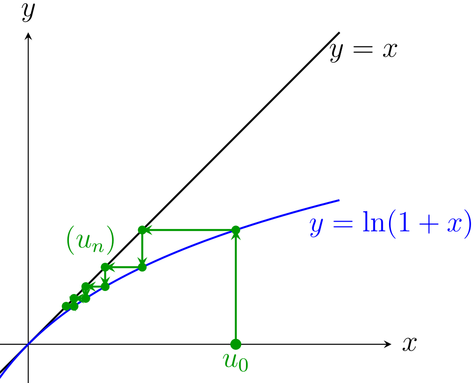
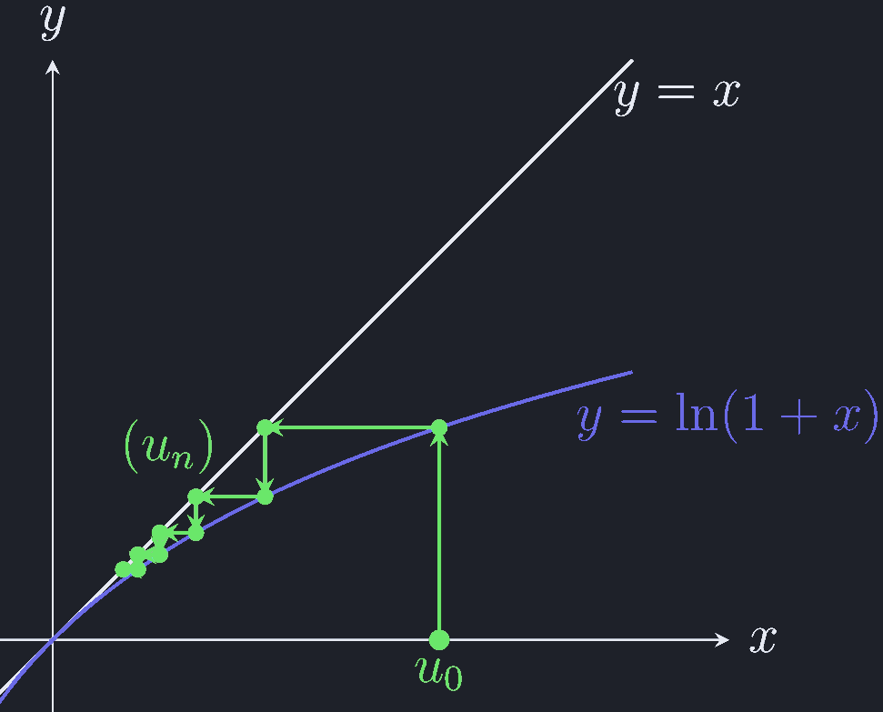

第 3 次习题课 数列极限¶
TD n°3 — Limites de suites
CORRIGÉ · 参考解答
阅读说明
每段先列法语原文；其下缩进、带深蓝竖条的小字号段落为中文翻译。加粗为关键词，括号内为中文释义。
Exercices à préparer¶
课前准备练习
Exercice 1.¶
encadrement
练习 1.（夹逼 encadrement）
Soit \(x\in\mathbb{R}\). Déterminer la limite de la suite \((u_n)_{n\in\mathbb{N}^*}\) définie par
设 \(x\in\mathbb{R}\)。求由下式定义的数列 \((u_n)_{n\in\mathbb{N}^*}\) 的极限：
Solution. Solution. Soit \(n\in\mathbb{N}^*\), on a \(\forall k\in[\![1,n]\!]\), \(\lfloor kx\rfloor\leqslant kx<\lfloor kx\rfloor-1\), ou encore \(kx-1<\lfloor kx\rfloor\leqslant kx\). Donc
解. 解。设 \(n\in\mathbb{N}^*\)，则对任意 \(k\in[\![1,n]\!]\)，有 \(\lfloor kx\rfloor\leqslant kx<\lfloor kx\rfloor-1\)（原文如此；应为 \(\lfloor kx\rfloor+1\)），亦即 \(kx-1<\lfloor kx\rfloor\leqslant kx\)。因此
Or
而
Donc, d'après le théorème de limite par encadrement,
因此，由夹逼定理（théorème de limite par encadrement），
Exercice 2.¶
suites liées
练习 2.（关联数列 suites liées）
Soit \((a_n)_{n\in\mathbb{N}}\) une suite de nombres positifs. Pour tout \(n\in\mathbb{N}\), on pose \(b_n=\dfrac{a_n}{1+a_n}\).
设 \((a_n)_{n\in\mathbb{N}}\) 为非负数列。对任意 \(n\in\mathbb{N}\)，令 \(b_n=\dfrac{a_n}{1+a_n}\)。
1. Vérifier les implications suivantes :
验证下列蕴含关系：
-
Si \(\lim\limits_{n\to+\infty}a_n=+\infty\) alors \(b_n\xrightarrow[n\to+\infty]{}1\).
若 \(\lim\limits_{n\to+\infty}a_n=+\infty\)，则 \(b_n\to1\)。
-
Si \((a_n)_{n\in\mathbb{N}}\) converge alors \((b_n)_{n\in\mathbb{N}}\) converge et sa limite est dans \([0,1[\).
若 \((a_n)_{n\in\mathbb{N}}\) 收敛，则 \((b_n)_{n\in\mathbb{N}}\) 收敛，且其极限属于 \([0,1[\)。
Solution.
解.
-
Si \(a_n\xrightarrow[n\to+\infty]{}+\infty\), alors \(\exists N\in\mathbb{N}\) tel que \(\forall n\geqslant N\), \(a_n\neq 0\) et
若 \(a_n\to+\infty\)，则存在 \(N\in\mathbb{N}\)，使得对任意 \(n\geqslant N\) 有 \(a_n\neq 0\)，并且
\[ \forall n\geqslant N,\qquad b_n=\frac{a_n}{1+a_n}=\frac{1}{1+\dfrac{1}{a_n}}\xrightarrow[n\to+\infty]{}1 \]car \(\dfrac{1}{a_n}\xrightarrow[n\to+\infty]{}0\).
因为 \(\dfrac{1}{a_n}\to0\)。
-
Si \(a_n\xrightarrow[n\to+\infty]{}\alpha\in\mathbb{R}\) alors \(\alpha\geqslant 0\) car \(\forall n\in\mathbb{N}\), \(a_n\geqslant 0\). Alors
若 \(a_n\to\alpha\in\mathbb{R}\)，则 \(\alpha\geqslant0\)，因为 \(\forall n\in\mathbb{N}\)，\(a_n\geqslant0\)。于是
\[ b_n=\frac{a_n}{1+a_n}\xrightarrow[n\to+\infty]{} \ell=\frac{\alpha}{1+\alpha}=1-\frac{1}{1+\alpha}\in[0,1[. \]Donc \(\ell\in[0,1[\).
因此 \(\ell\in[0,1[\)。
2. Étudier les implications réciproques.
研究反向蕴含。
Soit \(n\in\mathbb{N}\). On a, si \(b_n=\dfrac{a_n}{1+a_n}\), \(a_n\geqslant 0\iff b_n\in[0,1[\). D'où
设 \(n\in\mathbb{N}\)。若 \(b_n=\dfrac{a_n}{1+a_n}\)，则 \(a_n\geqslant0\iff b_n\in[0,1[\)。由此
Donc, si \(b_n\xrightarrow[n\to+\infty]{}1^-\) alors \(a_n\xrightarrow[n\to+\infty]{}+\infty\).
因此，若 \(b_n\to1^-\)，则 \(a_n\to+\infty\)。
Et si \(b_n\xrightarrow[n\to+\infty]{}\ell\in[0,1[\) alors \(a_n\xrightarrow[n\to+\infty]{}\alpha=\dfrac{\ell}{1-\ell}\).
而若 \(b_n\to\ell\in[0,1[\)，则 \(a_n\to\alpha=\dfrac{\ell}{1-\ell}\)。
Exercice 3.¶
étude de suite
练习 3.（数列研究 étude de suite）
Soit \((u_n)\) la suite définie par \(u_0>0\) et pour tout \(n\in\mathbb{N}\),
设 \((u_n)\) 是由 \(u_0>0\) 以及 \(\forall n\in\mathbb{N}\) 下式定义的数列：
1. Étudier la convergence de \((u_n)\).
研究 \((u_n)\) 的收敛性。
Montrons par récurrence sur \(n\in\mathbb{N}\), \(\forall n\in\mathbb{N}\), \(u_n>0\) :
我们对 \(n\in\mathbb{N}\) 用归纳法证明 \(\forall n\in\mathbb{N}\)，\(u_n>0\)：
-
c'est vrai pour \(n=0\) car \(u_0>0\),
当 \(n=0\) 时成立，因为 \(u_0>0\)；
-
supposons pour un \(n\in\mathbb{N}\) donné, \(u_n>0\) alors \(u_{n+1}=\dfrac{u_n}{1+nu_n^2}>0\).
假设对给定的 \(n\in\mathbb{N}\) 有 \(u_n>0\)，则 \(u_{n+1}=\dfrac{u_n}{1+nu_n^2}>0\)。
On conclut par récurrence.
由归纳法得证。
De plus, on a \(\forall n\in\mathbb{N}\), \(u_{n+1}=\dfrac{u_n}{1+nu_n^2}<u_n\) donc la suite \((u_n)\) décroissante minorée par \(0\) converge.
此外，对任意 \(n\in\mathbb{N}\)，\(u_{n+1}=\dfrac{u_n}{1+nu_n^2}<u_n\)，因此数列 \((u_n)\) 递减且以 \(0\) 为下界，故收敛。
2. Montrer que pour tout \(n\geqslant 2\), on a \(0<u_n\leqslant\dfrac{1}{n}\).
证明对任意 \(n\geqslant2\)，有 \(0<u_n\leqslant\dfrac{1}{n}\)。
On a déjà montré \(\forall n\in\mathbb{N}\), \(u_n>0\).
我们已经证明了 \(\forall n\in\mathbb{N}\)，\(u_n>0\)。
Montrons par récurrence sur \(n\geqslant 2\), \(\forall n\geqslant 2\), \(u_n\leqslant\dfrac{1}{n}\) :
我们对 \(n\geqslant2\) 用归纳法证明 \(\forall n\geqslant2\)，\(u_n\leqslant\dfrac{1}{n}\)：
-
\(u_1=u_0>0\), \(u_2=\dfrac{u_1}{1+2u_1^2}\)
\[ u_2\leqslant\frac{1}{2}\quad\Longleftrightarrow\quad 2u_0\leqslant 1+2u_0^2 \quad\Longleftrightarrow\quad u_0^2+(u_0-1)^2\geqslant 0. \]\(u_1=u_0>0\)，\(u_2=\dfrac{u_1}{1+2u_1^2}\)。因此当 \(n=2\) 时成立。
-
supposons pour un \(n\geqslant 2\) donné, \(u_n\leqslant\dfrac{1}{n}\), alors
假设对给定的 \(n\geqslant2\) 有 \(u_n\leqslant\dfrac{1}{n}\)，则
\[ u_{n+1}\leqslant\frac{1}{n+1}\quad\Longleftrightarrow\quad (n+1)u_n\leqslant 1+nu_n^2 \quad\Longleftrightarrow\quad nu_n^2-(n+1)u_n+1\geqslant 0. \]
Soit la fonction \(f_n(x)=nx^2-(n+1)x+1\). On a
令函数 \(f_n(x)=nx^2-(n+1)x+1\)。有
Donc comme \(u_n\leqslant\dfrac{1}{n}\), \(f_n(u_n)\geqslant 0\). D'où \(u_{n+1}\leqslant\dfrac{1}{n+1}\).
因此由于 \(u_n\leqslant\dfrac{1}{n}\)，\(f_n(u_n)\geqslant0\)。从而 \(u_{n+1}\leqslant\dfrac{1}{n+1}\)。
On conclut par récurrence.
由归纳法得证。
3. En considérant la suite \(\left(\dfrac{1}{u_{n+1}}-\dfrac{1}{u_n}\right)\) montrer que \(u_n\) est équivalent à \(1/n\) quand \(n\) tend vers \(+\infty\) c'est-à-dire que \(\lim\limits_{n\to+\infty}nu_n=1\).
通过考虑数列 \(\left(\dfrac{1}{u_{n+1}}-\dfrac{1}{u_n}\right)\)，证明当 \(n\) 趋于 \(+\infty\) 时 \(u_n\) 与 \(1/n\) 等价，即 \(\lim\limits_{n\to+\infty}nu_n=1\)。
On pose \(\forall n\in\mathbb{N}\), \(w_n=\dfrac{1}{u_{n+1}}-\dfrac{1}{u_n}\) qui définit bien une suite \((w_n)\) telle que \(\forall n\geqslant 2\)
令 \(\forall n\in\mathbb{N}\)，\(w_n=\dfrac{1}{u_{n+1}}-\dfrac{1}{u_n}\)，它确实定义了一个 数列 \((w_n)\)，使得 \(\forall n\geqslant2\)
Donc \(\forall n\geqslant 2\), \(\dfrac{1}{u_{n+1}}\leqslant\dfrac{1}{u_n}+1\) et \(\forall n\geqslant 2\), \(\dfrac{1}{u_n}\leqslant\dfrac{1}{u_2}+(n-2)\). D'où
因此 \(\forall n\geqslant2\)，\(\dfrac{1}{u_{n+1}}\leqslant\dfrac{1}{u_n}+1\)，且 \(\forall n\geqslant2\)，\(\dfrac{1}{u_n}\leqslant\dfrac{1}{u_2}+(n-2)\)。由此
d'après le théorème de la limite par encadrement \(\lim\limits_{n\to+\infty}nu_n=1\) et finalement
（原文第二行下界如此；按上一行应写作 \(\dfrac{n}{\frac{1}{u_2}+(n-2)}\)。）由夹逼定理 \(\lim\limits_{n\to+\infty}nu_n=1\)，最终
Exercice 4.¶
suites extraites
练习 4.（子列 suites extraites）
Soit \((x_n)\) une suite réelle. On suppose que les suites \((x_{2n})\), \((x_{2n+1})\) et \((x_{3n})\) convergent. Démontrer que la suite \((x_n)\) converge.
设 \((x_n)\) 为实数列。假设数列 \((x_{2n})\)、\((x_{2n+1})\) 与 \((x_{3n})\) 均收敛。 证明数列 \((x_n)\) 收敛。
Notons \(\ell_1,\ell_2,\ell_3\in\mathbb{R}\) les limites respectives de \((x_{2n})\), \((x_{2n+1})\) et \((x_{3n})\).
记 \(\ell_1,\ell_2,\ell_3\in\mathbb{R}\) 分别为 \((x_{2n})\)、\((x_{2n+1})\) 与 \((x_{3n})\) 的极限。
Soit \(\varepsilon>0\).
设 \(\varepsilon>0\)。
Comme \((x_{2n})\) converge vers \(\ell_1\), il existe \(N\in\mathbb{N}\) tel que pour tout \(n\geqslant N\), \(|x_{2n}-\ell_1|<\varepsilon\).
由于 \((x_{2n})\) 收敛于 \(\ell_1\)，存在 \(N\in\mathbb{N}\)，使得对任意 \(n\geqslant N\)， \(|x_{2n}-\ell_1|<\varepsilon\)。
Comme \((x_{2n+1})\) converge vers \(\ell_2\), il existe \(N'\geqslant N\) tel que pour tout \(n\geqslant N'\), \(|x_{2n+1}-\ell_2|<\varepsilon\).
由于 \((x_{2n+1})\) 收敛于 \(\ell_2\)，存在 \(N'\geqslant N\)，使得对任意 \(n\geqslant N'\)， \(|x_{2n+1}-\ell_2|<\varepsilon\)。
Comme \((x_{3n})\) converge vers \(\ell_3\), il existe \(N''\geqslant N'\) tel que pour tout \(n\geqslant N''\), \(|x_{3n}-\ell_3|<\varepsilon\).
由于 \((x_{3n})\) 收敛于 \(\ell_3\)，存在 \(N''\geqslant N'\)，使得对任意 \(n\geqslant N''\)，\(|x_{3n}-\ell_3|<\varepsilon\)。
Comme \(2N''\geqslant N''\) et \(3N''\geqslant N\), le terme \(x_{6N''}\) vérifie \(|x_{3(2N'')}-\ell_3|<\varepsilon\) et \(|x_{2(3N'')}-\ell_1|<\varepsilon\), d'où
由于 \(2N''\geqslant N''\) 且 \(3N''\geqslant N\)，项 \(x_{6N''}\) 满足 \(|x_{3(2N'')}-\ell_3|<\varepsilon\) 与 \(|x_{2(3N'')}-\ell_1|<\varepsilon\)，由此
De plus, comme \(2N''+1\geqslant N''\) et \(3N''+1\geqslant N'\), le terme \(x_{6N''+3}\) vérifie \(|x_{3(2N''+1)}-\ell_3|<\varepsilon\) et \(|x_{2(3N''+1)+1}-\ell_2|<\varepsilon\), d'où
此外，由于 \(2N''+1\geqslant N''\) 且 \(3N''+1\geqslant N'\)，项 \(x_{6N''+3}\) 满足 \(|x_{3(2N''+1)}-\ell_3|<\varepsilon\) 与 \(|x_{2(3N''+1)+1}-\ell_2|<\varepsilon\)，由此
Finalement \(|\ell_2-\ell_1|\leqslant|\ell_2-\ell_3|+|\ell_3-\ell_1|<4\varepsilon\).
最终 \(|\ell_2-\ell_1|\leqslant|\ell_2-\ell_3|+|\ell_3-\ell_1|<4\varepsilon\)。
Cela étant valable pour tout \(\varepsilon>0\), on en conclut que \(\ell_2=\ell_1\).
这对任意 \(\varepsilon>0\) 都成立，故可推得 \(\ell_2=\ell_1\)。
Les deux suites \((x_{2n})\) et \((x_{2n+1})\) convergent et tendent vers la même limite \(\ell_1\) donc \((x_n)\) converge.
数列 \((x_{2n})\) 与 \((x_{2n+1})\) 均收敛且趋于同一极限 \(\ell_1\)，因此 \((x_n)\) 收敛。
Exercice 5.¶
suite définie implicitement
练习 5.（隐式定义的数列 suite définie implicitement）
Pour tout entier \(n\) strictement positif, on considère le polynôme :
对任意正整数 \(n\)，考虑多项式：
1. Montrer que le polynôme \(P_n\) admet une unique racine positive \(\alpha_n\).
证明多项式 \(P_n\) 有唯一的正根 \(\alpha_n\)。
Soit \(n\in\mathbb{N}^*\).
设 \(n\in\mathbb{N}^*\)。
On a \(P_n(0)=-1<0\) et \(P_n\) continue strictement croissante sur \([0,+\infty[\) avec \(P_n(1)=n-1\geqslant 0\).
有 \(P_n(0)=-1<0\)，且 \(P_n\) 在 \([0,+\infty[\) 上连续且严格递增，并有 \(P_n(1)=n-1\geqslant0\)。
D'après le théorème des valeurs intermédiaires, il existe donc une unique racine positive. On la note \(\alpha_n\) et \(\alpha_n\in\,]0,1]\).
由介值定理（théorème des valeurs intermédiaires），存在唯一的正根。记之为 \(\alpha_n\)， 且 \(\alpha_n\in\,]0,1]\)。
2. Montrer que \(\forall n\in\mathbb{N}^*\), \(P_n(\alpha_{n+1})<0\). En déduire le sens de variation de la suite \((\alpha_n)\) et démontrer qu'elle converge.
证明 \(\forall n\in\mathbb{N}^*\)，\(P_n(\alpha_{n+1})<0\)。由此推出数列 \((\alpha_n)\) 的 单调性，并证明它收敛。
Soit \(n\in\mathbb{N}^*\).
设 \(n\in\mathbb{N}^*\)。
Comme \(P_n\) est croissante et \(P_n(\alpha_n)=0\), on a \(\alpha_{n+1}<\alpha_n\).
由于 \(P_n\) 递增且 \(P_n(\alpha_n)=0\)，有 \(\alpha_{n+1}<\alpha_n\)。
La suite \((\alpha_n)\) est décroissante, minorée par \(0\) donc elle converge d'après le théorème de la limite monotone.
数列 \((\alpha_n)\) 递减，且以 \(0\) 为下界，因此由单调极限定理它收敛。
3. Simplifier l'expression de \(P_n(x)\) pour \(x\neq 1\) et en déduire la limite de la suite \((\alpha_n)\).
化简 \(P_n(x)\) 在 \(x\neq1\) 时的表达式，并由此推出数列 \((\alpha_n)\) 的极限。
Pour \(x\neq 0\), on a
当 \(x\neq0\) 时，有（原文如此；应为 \(x\neq1\)。）
Donc, comme \(\forall n\geqslant 2\), \(0<\alpha_n<\alpha_2<1\), on a \(\lim\limits_{n\to+\infty}\alpha_n^{\,n+1}=0\).
因此，由于 \(\forall n\geqslant2\)，\(0<\alpha_n<\alpha_2<1\)，有 \(\lim\limits_{n\to+\infty}\alpha_n^{\,n+1}=0\)。
Quand on passe l'égalité \(\dfrac{\alpha_n^{\,n+1}-1}{\alpha_n-1}-2=0\) à la limite, en notant \(\ell=\lim\limits_{n\to+\infty}\alpha_n\) on obtient \(-\dfrac{1}{\ell-1}-2=0\), d'où
当把等式 \(\dfrac{\alpha_n^{\,n+1}-1}{\alpha_n-1}-2=0\) 取极限时，记 \(\ell=\lim\limits_{n\to+\infty}\alpha_n\)，得到 \(-\dfrac{1}{\ell-1}-2=0\)，由此
Vocabulaire clé 重点词汇
第一部分（Exercices à préparer）核心术语
- encadrement：夹逼，框定
- théorème de limite par encadrement：夹逼定理
- suite liée：关联数列
- implication：蕴含关系
- implication réciproque：反向蕴含
- convergence：收敛性
- suite croissante / décroissante：递增 / 递减数列
- suite minorée / majorée：有下界 / 有上界的数列
- minorée par \(0\)：以 \(0\) 为下界
- récurrence：数学归纳法
- on conclut par récurrence：由归纳法得证
- suite extraite：子列
- racine positive：正根
- unique racine：唯一的根
- théorème des valeurs intermédiaires：介值定理
- théorème de la limite monotone：单调极限定理
- sens de variation：单调性
- polynôme：多项式
- suite définie implicitement：隐式定义的数列
- équivalent à：与……等价
- quand \(n\) tend vers \(+\infty\)：当 \(n\) 趋于 \(+\infty\) 时
- on pose：令
- d'où：由此，因此
- pour tout entier \(n\) strictement positif：对任意正整数 \(n\)
Exercices supplémentaires¶
补充练习
Exercice 6.¶
norme
练习 6.（范数 norme）
Soit \((u_n)\) et \((v_n)\) deux suites réelles telles que \((u_n^2+u_nv_n+v_n^2)\) tend vers \(0\) quand \(n\) tend vers \(+\infty\). Montrer que les deux suites \((u_n)\) et \((v_n)\) convergent vers \(0\).
设 \((u_n)\) 与 \((v_n)\) 为两个实数列，使得当 \(n\) 趋于 \(+\infty\) 时 \((u_n^2+u_nv_n+v_n^2)\) 趋于 \(0\)。证明数列 \((u_n)\) 与 \((v_n)\) 都收敛于 \(0\)。
On pose pour tout \(n\in\mathbb{N}\),
对任意 \(n\in\mathbb{N}\)，令
On a pour tout \(n\in\mathbb{N}\)
对任意 \(n\in\mathbb{N}\) 有
Donc d'après le théorème de limite par encadrement \(\lim\limits_{n\to+\infty}u_n^2=\lim\limits_{n\to+\infty}v_n^2=0\).
因此由夹逼定理 \(\lim\limits_{n\to+\infty}u_n^2=\lim\limits_{n\to+\infty}v_n^2=0\)。
Cela implique \(\lim\limits_{n\to+\infty}u_n=\lim\limits_{n\to+\infty}v_n=0\)
这意味着 \(\lim\limits_{n\to+\infty}u_n=\lim\limits_{n\to+\infty}v_n=0\)。
Exercice 7.¶
équivalents
练习 7.（等价 équivalents）
1. On définit la suite \((x_n)\) par \(x_0>0\) et pour tout entier \(n\), \(x_{n+1}=x_n+\dfrac{1}{x_n}\).
1. 定义数列 \((x_n)\) 如下：\(x_0>0\)，且对任意整数 \(n\)， \(x_{n+1}=x_n+\dfrac{1}{x_n}\)。
(a) Déterminer la limite de \((x_n)\).
（a）求 \((x_n)\) 的极限。
Montrons par récurrence sur \(n\in\mathbb{N}\) que \(\forall n\in\mathbb{N}\), \(x_n>0\) :
我们对 \(n\in\mathbb{N}\) 用归纳法证明 \(\forall n\in\mathbb{N}\)，\(x_n>0\)：
-
c'est vrai pour \(n=0\) car \(x_0>0\)
当 \(n=0\) 时成立，因为 \(x_0>0\)；
-
supposons, pour un \(n\in\mathbb{N}\) donné, \(x_n>0\), alors \(x_{n+1}=x_n+\dfrac{1}{x_n}>0\).
假设对给定的 \(n\in\mathbb{N}\) 有 \(x_n>0\)，则 \(x_{n+1}=x_n+\dfrac{1}{x_n}>0\)。
On conclut par récurrence \(\forall n\in\mathbb{N}\), \(x_n>0\).
由归纳法得证 \(\forall n\in\mathbb{N}\)，\(x_n>0\)。
\(\forall n\in\mathbb{N}\), \(x_{n+1}=x_n+\dfrac{1}{x_n}>x_n\) donc la suite \((x_n)\) est croissante.
\(\forall n\in\mathbb{N}\)，\(x_{n+1}=x_n+\dfrac{1}{x_n}>x_n\)，因此数列 \((x_n)\) 递增。
Si \(x_n\xrightarrow[n\to+\infty]{}\ell\in\,]0,+\infty[\) alors \(\ell\) vérifie \(\ell=\ell+\dfrac{1}{\ell}\) ce qui est impossible.
若 \(x_n\to\ell\in\,]0,+\infty[\)，则 \(\ell\) 满足 \(\ell=\ell+\dfrac{1}{\ell}\)，这是不可能的。
Donc \(x_n\xrightarrow[n\to+\infty]{}+\infty\).
因此 \(x_n\to+\infty\)。
(b) Vérifier que la suite \((x_{n+1}^2-x_n^2)\) tend vers une limite finie que l'on déterminera.
（b）验证数列 \((x_{n+1}^2-x_n^2)\) 趋于一个有限极限，并求出它。
Soit \(n\in\mathbb{N}\). On a
设 \(n\in\mathbb{N}\)。有
Donc la suite \((x_{n+1}^2-x_n^2)\) tend vers \(2\).
因此数列 \((x_{n+1}^2-x_n^2)\) 趋于 \(2\)。
© En exprimant \(x_n^2-x_0^2\) comme une somme de \(x_{k+1}^2-x_k^2\), en déduire un équivalent de \(x_n\).
（c）将 \(x_n^2-x_0^2\) 表示为 \(x_{k+1}^2-x_k^2\) 之和，由此推出 \(x_n\) 的等价量。
Soit \(n\in\mathbb{N}\). On a, pour \(k\in\mathbb{N}\), \(x_{k+1}^2-x_k^2=2+\dfrac{1}{x_k^2}>2\), d'où
设 \(n\in\mathbb{N}\)。对 \(k\in\mathbb{N}\)，有 \(x_{k+1}^2-x_k^2=2+\dfrac{1}{x_k^2}>2\)，由此
Soit \(\varepsilon>0\).
设 \(\varepsilon>0\)。
Comme \(\dfrac{1}{x_n^2}\xrightarrow[n\to+\infty]{}0\), on a
由于 \(\dfrac{1}{x_n^2}\to0\)，有
Alors pour \(n\geqslant N\),
于是对 \(n\geqslant N\)，
D'où
由此
On a \(\dfrac{1}{n}\left(x_0^2+\sum\limits_{k=0}^{N-1}\dfrac{1}{x_k^2}\right) \xrightarrow[n\to+\infty]{}0\) donc \(\exists N'>N\) tel que
有 \(\dfrac{1}{n}\left(x_0^2+\sum\limits_{k=0}^{N-1}\dfrac{1}{x_k^2}\right)\to0\)， 因此存在 \(N'>N\)，使得
Alors, pour tout \(n\geqslant N'\)
于是对任意 \(n\geqslant N'\)
D'où \(\dfrac{x_n^2}{n}\xrightarrow[n\to+\infty]{}2\).
由此 \(\dfrac{x_n^2}{n}\to2\)。
En prenant la racine carrée de cette suite on obtient \(\dfrac{x_n}{\sqrt{n}}\xrightarrow[n\to+\infty]{}\sqrt{2}\), c'est-à-dire
对该数列取平方根，得到 \(\dfrac{x_n}{\sqrt{n}}\to\sqrt{2}\)，即
2. Soit \((u_n)\) la suite définie par \(u_0>0\) et \(\forall n\in\mathbb{N}\), \(u_{n+1}=\ln(1+u_n)\).
2. 设 \((u_n)\) 是由 \(u_0>0\) 及 \(\forall n\in\mathbb{N}\)， \(u_{n+1}=\ln(1+u_n)\) 定义的数列。
(a) Montrer que \(u_n\) converge et donner sa limite.
（a）证明 \(u_n\) 收敛并给出其极限。
On pose \(f:x\mapsto\ln(1+x)-x\) définie continue dérivable sur \(]-1,+\infty[\), de plus
令 \(f:x\mapsto\ln(1+x)-x\)，它在 \(]-1,+\infty[\) 上连续可导，并且
d'où le tableau de variation
由此得单调性表
On trace les fonctions \(x\mapsto\ln(1+x)\) et \(x\mapsto x\) et on représente les premiers termes de la suite \((u_n)\) ci-dessous
我们画出函数 \(x\mapsto\ln(1+x)\) 与 \(x\mapsto x\)，并在下图中表示数列 \((u_n)\) 的前几项
 
On conjecture que la suite \((u_n)\) est décroissante, minorée par \(0\) et converge vers \(0\).
我们猜测数列 \((u_n)\) 递减、以 \(0\) 为下界，并收敛于 \(0\)。
Montrons par récurrence sur \(n\in\mathbb{N}\) que \(\forall n\in\mathbb{N}\), \(u_n>0\)
我们对 \(n\in\mathbb{N}\) 用归纳法证明 \(\forall n\in\mathbb{N}\)，\(u_n>0\)：
-
c'est vrai pour \(n=0\), \(u_0>0\)
当 \(n=0\) 时成立，\(u_0>0\)；
-
supposons \(u_n>0\) pour un \(n\in\mathbb{N}\) donné, alors \(u_{n+1}=\ln(1+u_n)>0\)
假设对给定的 \(n\in\mathbb{N}\) 有 \(u_n>0\)，则 \(u_{n+1}=\ln(1+u_n)>0\)；
On conclut par récurrence \(\forall n\in\mathbb{N}\), \(u_n>0\).
由归纳法得证 \(\forall n\in\mathbb{N}\)，\(u_n>0\)。
D'après l'étude de la fonction \(f\), on a \(\forall x>0\), \(\ln(1+x)<x\).
由对函数 \(f\) 的研究，有 \(\forall x>0\)，\(\ln(1+x)<x\)。
Donc \(\forall n\in\mathbb{N}\), \(u_{n+1}=\ln(1+u_n)<u_n\). La suite \((u_n)\) est décroissante.
因此 \(\forall n\in\mathbb{N}\)，\(u_{n+1}=\ln(1+u_n)<u_n\)。数列 \((u_n)\) 递减。
Par le théorème de convergence monotone, la suite \((u_n)\) décroissante minorée converge vers \(\mu\geqslant 0\) solution de \(\mu=\ln(1+\mu)\) c'est-à-dire \(\mu=0\).
由单调收敛定理，递减且有下界的数列 \((u_n)\) 收敛于 \(\mu\geqslant0\)，其中 \(\mu\) 是 \(\mu=\ln(1+\mu)\) 的解，即 \(\mu=0\)。
(b) Déterminer le réel \(\alpha\) tel que la suite \((u_{n+1}^{\alpha}-u_n^{\alpha})\) converge vers \(\ell\in\mathbb{R}^*\). (On rappelle que \(\lim\limits_{x\to 0}\dfrac{\ln(1+x)-x}{x^2}=-\dfrac{1}{2}\).)
（b）求实数 \(\alpha\)，使得数列 \((u_{n+1}^{\alpha}-u_n^{\alpha})\) 收敛于 \(\ell\in\mathbb{R}^*\)。（回忆 \(\lim\limits_{x\to0}\dfrac{\ln(1+x)-x}{x^2}=-\dfrac{1}{2}\)。）
Soit \(\alpha\in\mathbb{R}\), on fait le développement limité de \(x\mapsto(\ln(1+x))^{\alpha}\) à l'ordre deux en \(0\) :
设 \(\alpha\in\mathbb{R}\)，我们对 \(x\mapsto(\ln(1+x))^{\alpha}\) 在 \(0\) 处作二阶展开：
D'où
由此
Pour avoir \((\ln(1+x))^{\alpha}-x^{\alpha}\xrightarrow[x\to 0]{}\ell\in\mathbb{R}^*\) on prend \(\alpha=-1\).
要使 \((\ln(1+x))^{\alpha}-x^{\alpha}\to\ell\in\mathbb{R}^*\)，取 \(\alpha=-1\)。
Alors, comme \(u_n\xrightarrow[n\to+\infty]{}0\), \(\forall n\in\mathbb{N}\),
于是，由于 \(u_n\to0\)，\(\forall n\in\mathbb{N}\)，
© Montrer alors que \(u_n\sim\dfrac{2}{n}\).
（c）然后证明 \(u_n\sim\dfrac{2}{n}\)。
Soit \(\varepsilon>0\).
设 \(\varepsilon>0\)。
D'après la question précédente, \(\exists N\in\mathbb{N}\) tel que \(\forall n\geqslant N\), \(\left|u_{n+1}^{-1}-u_n^{-1}-\dfrac{1}{2}\right|<\varepsilon\)
由上一问，存在 \(N\in\mathbb{N}\)，使得 \(\forall n\geqslant N\)， \(\left|u_{n+1}^{-1}-u_n^{-1}-\dfrac{1}{2}\right|<\varepsilon\)。
On écrit alors pour \(n\geqslant N\)
于是对 \(n\geqslant N\) 写出
d'où
由此
\(\exists N'\geqslant N\) tel que \(\forall n\geqslant N'\)
存在 \(N'\geqslant N\)，使得 \(\forall n\geqslant N'\)
Alors \(\forall n\geqslant N'\)
于是 \(\forall n\geqslant N'\)
d'où \(\lim\limits_{n\to+\infty}\dfrac{u_n^{-1}}{n}=\dfrac{1}{2}\).
由此 \(\lim\limits_{n\to+\infty}\dfrac{u_n^{-1}}{n}=\dfrac{1}{2}\)。
Or si une suite \((v_n)\) vérifie \(v_n\xrightarrow[n\to+\infty]{}\nu\in\mathbb{R}^*\) alors \(v_n^{-1}\xrightarrow[n\to+\infty]{}\nu^{-1}\).
而若数列 \((v_n)\) 满足 \(v_n\to\nu\in\mathbb{R}^*\)，则 \(v_n^{-1}\to\nu^{-1}\)。
Donc \(\lim\limits_{n\to+\infty}nu_n=2\) et
因此 \(\lim\limits_{n\to+\infty}nu_n=2\)，且
Vocabulaire clé 重点词汇
第二部分（Exercices supplémentaires）核心术语
- norme：范数
- équivalents：等价关系
- équivalent à：与……等价
- développement limité (DL)：渐近展开（泰勒展开）
- à l'ordre deux en \(0\)：在 \(0\) 处展开到二阶
- \(o(x^2)\)：高阶无穷小
- racine carrée：平方根
- suite réelle：实数列
- tendre vers \(0\)：趋于 \(0\)
- converger vers：收敛于
- théorème de convergence monotone：单调收敛定理
- suite décroissante minorée：递减且有下界的数列
- on conjecture：我们猜测
- on trace：我们画出
- premiers termes：前几项
- ci-dessous：如下
- on écrit alors：于是写出
- somme：和
- on prend la racine carrée：取平方根
- c'est-à-dire：即
- limite finie：有限极限
- être bien définie：有良好定义